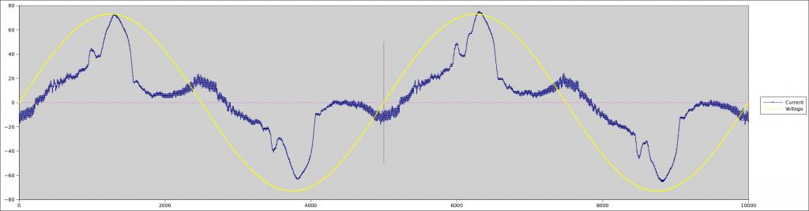

Hi. I was wondering if it is possible to measure voltage and current simultaneously to check the phase difference at an instant using any of the current sketch? I have read on this forum using two emonTx's but that is also not quite perfect it seems. Thanks
Measuring voltage, current and phase shift simultaneouly
Submitted by bavitalsign on Mon, 01/12/2014 - 18:43»
Re: Measuring voltage, current and phase shift simultaneouly
The AVR based Arduinos only have 1 ADC, so you can't take two readings at exactly the same time. A reading takes about 110 usecs, so the best you can do is measure one and then measure the other 110 usecs later, and then try to compensate for the known lag in software.
"phase difference at an instant" is a tricky concept. If you've got 2 perfect sine waves, and you know their amplitude in advance, then I guess you could just about pull it off, although you'd have to deal with the ambiguity that any value occurs twice, once on the way up and again on the way down.
In a lab environment, with a nice stiff V and a simple resistive load, 2 perfect sine waves are achievable, but if you're interested in measuring real life loads, on real life grids then neither will be a perfect sine wave, and current will be a long way from being a sine wave.
Because of all that ambiguity, one approach is to time the zero-crossings (either rising or falling, but consistently) of each signal and compare that. If the current signal is nasty enough even that can be pretty bogus though. In the attached example you can see how tricky it gets.

Re: Measuring voltage, current and phase shift simultaneouly
If you are content to have the answer a cycle or so late, then I think the only realistic way to do it would be to run a FFT on one cycle of waveform and extract the phase of the fundamental from that. I suspect that would be beyond the capabilities of the Atmel 328P and you'd need a much more powerful processor.
I've done the same thing offline using a sound card and a spreadsheet, so it will be possible more-or-less in real time given an efficient FFT algorithm and sufficient processing power.